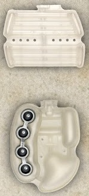

UNE PETITE PRESENTATION
bonjour, aujourd'hui nous allons vous présenter une paire iconique de Nike : la Air max Plus. Pour la présenter, nous allons vous la faire découvrir. Notre site ce compose de 3 parties : une présentation, les tn 2 et les tn3 que nous allons classer dans un top 10. J’espère qu’a la fin de votre lecture de notre site, vous aurez envie d’en acheter !!! Nous avons choisi de vous présenter cette paire car pour nous elle reste l’une des plus importante de Nike. Elle a traversé des générations. Et depuis peu, nous avons pu voir qu’elle suscite un vrai engagement chez certain. Certains influenceurs ont remarqué le potentiel de cette masterclass.
UN PEU D'HISTOIRE
Cette basket emblématique a été pionnière dans l’établissement d’une nouvelle esthétique Air Max.
Destinés premièrement aux coureurs, les tons bleus de la première TN s’inspirent du crépuscule en Floride.
Pour les touches de noir, elles font référence aux palmiers de l’État américain, quant aux formes géométriques apparaissant sur la tige,
elles les doivent à la silhouette que forme une queue de baleine.
Nous la devons a sean mcdowell. Il arrive a nike en 1997, missionné par la firme de Beaverton et Foot Locker, celui-ci doit créer une nouvelle chaussure de course.
Ce projet intitulé "Sky Air" bat un peu de l’aile à l’époque et après plus de 15 concepts proposés.
la Nike Air Max Plus ne pèse à l’époque que 350 grammes et renferme la technologie de Nike : le Tuned Air qui donne son nom au diminutif TN.
La technologie Air renferme donc des pods dans la bulle, offrant ainsi un meilleur amorti et réduisant l’effet de pronation de cette dernière.
Foot Locker est la première enseigne à obtenir les droits exclusifs de vente. L'engouement auprès des adolescents, garçons comme filles, est important.
La Tn envahit les cours de collège ou lycée, conçue à l'origine pour la pratique de la course à pied,
elle est devenue plus une chaussure de « style de vie » qu’une chaussure de sport.
LA CONCEPTION
Les premières chaussures de chez nike se sont commercialisées en 1972. Nike fabriquait à l'origine des chaussures de course,
mais s'est rapidement diversifiée en fabriquant des chaussures de basket-ball, des cleets, des chaussures de tennis et des chaussures de patinage.
Aujourd'hui, l'entreprise produit des centaines de types de chaussures différents,
Nike a initialement produit ses chaussures aux États-Unis, mais a rapidement sous-traité le travail à des usines en Chine.
En 2010, le Vietnam est devenu le plus grand producteur de chaussures de Nike, produisant en Chine et en Indonésie.
Les chaussures Nike sont principalement fabriquées au Vietnam avec près de 25% des matériaux rassemblés là-bas et 16% des composants fabriqués là-bas et
25% de toutes les usines de chaussures de produits finis là-bas. Chaque usine a un propriétaire différent,
Nike ne possédant aucune de ces installations.

Cette nouvelle technologie revolutionaire reste impressionnante mais, grace a nous, vous allez vous coucher moins bettes ce soir ;). Tout se passe en réalité au niveau du talon renfermant une membrane séparée en deux parties bien distinctes : une chambre à air centrale accompagnée de 4 membranes appelée la technologie hémisphère. L’objectif derrière la création de cette technologie était de réduire le mouvement de supination (la rotation vers l’intérieure de la cheville) par ces membranes au sein desquels la pression était moins élevée. C’était ainsi la première fois qu’un élément mécanique était associé à la technologie Air.